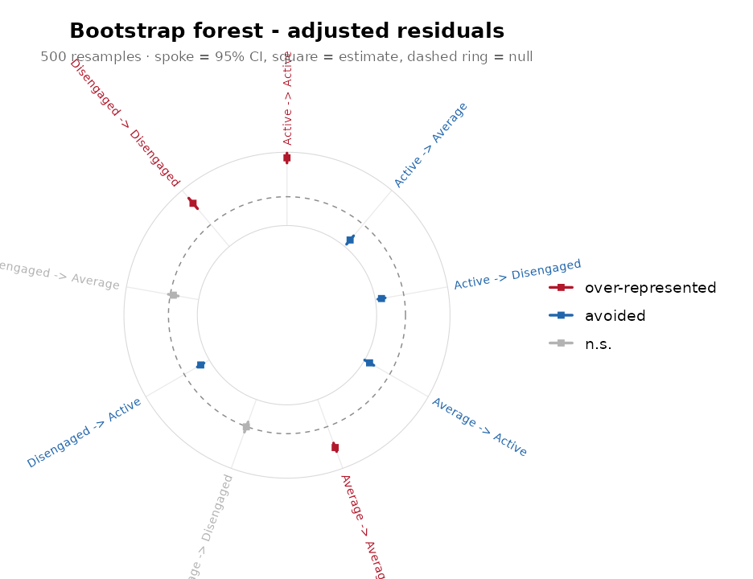

Evaluating transitions
Written by Mohammed Saqr and Sonsoles López-Pernas
Source:vignettes/confirmatory.Rmd
confirmatory.RmdA fitted lag sequential model is an estimate, not a finding. The adjusted residual tests each transition against independence, but that test rests on large-sample assumptions that sequential data can violate: transitions within one sequence are not independent observations, and a few long or atypical sequences can carry a large share of the table. A claim about a transition therefore needs evidence matched to its scope. A claim about one edge needs an estimate of how precisely that edge is known; a claim that a significant edge is real needs to survive the loss of part of the sample; a claim about the whole network needs to reproduce in independent halves of the data; and a claim that the structure exceeds chance needs a null that does not rest on the residual’s approximation.
lagdynamics pairs each kind of claim with a procedure.
All of them take the fitted model as their first argument and are read
with transitions(), the same verb that reads the fit.
| Claim | Evidence | Function |
|---|---|---|
| a transition is precisely estimated | edge-level uncertainty |
certainty_lsa(), bootstrap_lsa()
|
| a significant transition is not fragile | robustness to case loss | stability_lsa() |
| the whole network is reproducible | split-half reliability | reliability_lsa() |
| the structure exceeds chance | an empirical null | permute_lsa() |
Differences between groups are a claim of their own and are covered in Comparing groups.
Data
engagement records the weekly engagement state of 138
students over 15 weeks; two rows are entirely missing, so the model uses
136 sequences.
- Sequence: each row is one student.
- Order: the column order, weeks 1 to 15.
-
State:
Active,Average, orDisengaged.
The student is the unit that all resampling procedures below draw, drop, or split, because the transitions of one student are dependent.
library(lagdynamics)
fit <- lsa(engagement)
transitions(fit, significant = TRUE, sort = "strength")
#> from to lag count expected prob prob_col adj_res p yules_q
#> 1 Active Active 1 459 247 0.698 0.7051 21.7 4.60e-104 0.828
#> 2 Disengaged Disengaged 1 157 60 0.483 0.4906 15.4 1.90e-53 0.754
#> 3 Average Active 1 153 282 0.204 0.2350 -12.9 4.16e-38 -0.601
#> 4 Active Disengaged 1 23 121 0.035 0.0719 -12.6 3.64e-36 -0.826
#> 5 Average Average 1 458 330 0.610 0.6003 12.5 1.35e-35 0.553
#> 6 Active Average 1 176 290 0.267 0.2307 -11.3 1.06e-29 -0.534
#> 7 Disengaged Active 1 39 122 0.120 0.0599 -10.5 5.11e-26 -0.698
#> kappa kappa_z kappa_p lift sign significant
#> 1 0.444 19.19 4.68e-82 1.858 over TRUE
#> 2 0.314 13.56 7.34e-42 2.618 over TRUE
#> 3 -0.499 -14.70 6.81e-49 0.543 under TRUE
#> 4 -0.827 -13.41 5.14e-41 0.189 under TRUE
#> 5 0.227 9.83 7.97e-23 1.386 over TRUE
#> 6 -0.424 -12.48 9.39e-36 0.608 under TRUE
#> 7 -0.707 -11.46 2.03e-30 0.320 under TRUESeven of the nine transitions are significant: the three
self-transitions are over-represented, and the four moves into or out of
Active are avoided. The procedures below ask how much of
this survives scrutiny.
Edge uncertainty
A claim about one transition requires an estimate of how much it
could vary. certainty_lsa() derives that uncertainty
analytically: each state’s outgoing transitions are modelled as
Dirichlet-Multinomial, which gives a posterior mean, a credible
interval, and a certainty decision for every transition probability
without resampling.
cert <- certainty_lsa(fit)
cert
#> <lsa_certainty> (analytic Dirichlet-Multinomial)
#> engine: classical
#> prior: Dirichlet(0.50)
#> CI level: 95% | inference: stability
#> certain edges: 7 of 9
transitions(cert)
#> from to observed prob_observed prob_mean prob_se prob_ci_low prob_ci_high
#> 1 Active Active 459 0.698 0.6967 0.01789 0.6611 0.731
#> 2 Average Active 153 0.204 0.2040 0.01468 0.1760 0.233
#> 3 Disengaged Active 39 0.120 0.1210 0.01802 0.0879 0.158
#> 4 Active Average 176 0.267 0.2676 0.01723 0.2345 0.302
#> 5 Average Average 458 0.610 0.6093 0.01777 0.5742 0.644
#> 6 Disengaged Average 129 0.397 0.3966 0.02703 0.3443 0.450
#> 7 Active Disengaged 23 0.035 0.0356 0.00721 0.0229 0.051
#> 8 Average Disengaged 140 0.186 0.1867 0.01420 0.1597 0.215
#> 9 Disengaged Disengaged 157 0.483 0.4824 0.02761 0.4284 0.537
#> p_value stable adj_res_observed adj_res_stable
#> 1 5.56e-20 TRUE 21.663 TRUE
#> 2 6.06e-04 TRUE -12.906 TRUE
#> 3 9.45e-02 FALSE -10.549 FALSE
#> 4 1.21e-04 TRUE -11.319 TRUE
#> 5 3.14e-17 TRUE 12.453 TRUE
#> 6 2.23e-04 TRUE -1.736 TRUE
#> 7 2.19e-01 FALSE -12.557 FALSE
#> 8 1.17e-03 TRUE 0.176 TRUE
#> 9 9.44e-06 TRUE 15.390 TRUEThe persistence Active -> Active is pinned down
tightly: a probability of 0.698 with a 95% credible interval from 0.661
to 0.731. Two edges are not classed as stable.
Disengaged -> Active has an interval from 0.088 to 0.158
around a probability of 0.120, wide relative to its size because
Disengaged is the least visited source state, and
Active -> Disengaged (0.035, interval 0.023 to 0.051) is
equally imprecise relative to its size. A residual can be large while
the probability behind it is still uncertain, which is why both are
reported.
bootstrap_lsa() reaches the same question by resampling.
It draws students with replacement, refits the model on each resample,
and records a percentile interval for the count, the residual, the
probability, and Yule’s Q of every edge (Efron, 1979). Resampling whole
sequences preserves the dependence within each student that the analytic
model ignores, so the bootstrap is preferred when students may differ
systematically. The seed is set once here and governs every resampling
procedure in this article; the bootstrap draws 500 resamples.
set.seed(2026)
boot <- bootstrap_lsa(fit, R = 500)
boot
#> <lsa_bootstrap>
#> engine: classical
#> level: sequence
#> replicates: 500
#> CI level: 95%
#> stable edges: 7 of 9
transitions(boot, significant = TRUE) |> head(4)
#> from to observed count_mean count_se count_ci_low count_ci_high
#> 1 Active Active 459 462.9 49.96 367 558
#> 2 Average Active 153 152.9 14.83 124 184
#> 3 Disengaged Active 39 38.6 6.36 27 50
#> 4 Active Average 176 176.4 15.53 148 207
#> adj_res_observed adj_res_mean adj_res_se adj_res_ci_low adj_res_ci_high adj_res_p_boot
#> 1 21.7 21.7 1.48 18.8 24.31 0
#> 2 -12.9 -13.0 1.52 -16.1 -10.12 0
#> 3 -10.5 -10.5 1.11 -12.6 -8.35 0
#> 4 -11.3 -11.4 1.61 -14.4 -8.28 0
#> adj_res_stable prob_observed prob_mean prob_ci_low prob_ci_high yules_q_observed
#> 1 TRUE 0.698 0.698 0.6402 0.748 0.828
#> 2 TRUE 0.204 0.204 0.1629 0.247 -0.601
#> 3 TRUE 0.120 0.121 0.0797 0.164 -0.698
#> 4 TRUE 0.267 0.268 0.2218 0.323 -0.534
#> yules_q_mean yules_q_ci_low yules_q_ci_high
#> 1 0.827 0.761 0.877
#> 2 -0.602 -0.702 -0.483
#> 3 -0.697 -0.796 -0.583
#> 4 -0.533 -0.641 -0.406Seven of the nine edges are stable under the bootstrap: their
residual interval excludes zero.
transitions(boot, significant = TRUE) keeps those seven,
and the first four are shown. The residual of
Active -> Active ranges from 18.8 to 24.31 across
resamples, far from zero. Its probability interval, 0.640 to 0.748, is
wider than the analytic credible interval (0.661 to 0.731) because
resampling students carries the variation between students that the
Dirichlet-Multinomial model treats as absent.
Disengaged -> Active shows why the two procedures answer
different questions: its residual interval (-12.6 to -8.35) is firmly
negative, so the avoidance itself is not in doubt, while its probability
(0.080 to 0.164) remains imprecise.
The bootstrap forest shows the interval of every edge at once.
plot(boot)
Each spoke is one edge: the square is the bootstrap estimate of the
adjusted residual, the bar its 95% interval, and the dashed ring the
null value of zero. The seven significant edges lie clearly inside or
outside the ring, over-represented edges outside and avoided edges
inside, while the two grey, non-significant edges,
Average -> Disengaged and
Disengaged -> Average, sit on it. No significant edge
has an interval that reaches the null.
Robustness to case loss
stability_lsa() repeatedly drops a share of the
students, refits, and records the fraction of replicates in which each
edge is significant (stability). By default it keeps 80% of
the students per replicate and flags an edge as stable when it is
significant in at least 95% of replicates. The call below runs 200
replicates.
stab <- stability_lsa(fit, R = 200)
stab
#> <lsa_stability>
#> engine: classical
#> replicates: 200
#> proportion: 80%
#> min stable: 95%
#> failed: 0 of 200 replicates
#> stable edges: 7 of 9 (>= 95% across replicates)
transitions(stab)
#> from to observed_sig stability stable
#> 1 Active Active TRUE 1.000 TRUE
#> 2 Average Active TRUE 1.000 TRUE
#> 3 Disengaged Active TRUE 1.000 TRUE
#> 4 Active Average TRUE 1.000 TRUE
#> 5 Average Average TRUE 1.000 TRUE
#> 6 Disengaged Average FALSE 0.255 FALSE
#> 7 Active Disengaged TRUE 1.000 TRUE
#> 8 Average Disengaged FALSE 0.005 FALSE
#> 9 Disengaged Disengaged TRUE 1.000 TRUENone of the 200 replicates failed, and all seven significant edges
remain significant in every replicate (stability 1.000), so the
significance pattern does not depend on particular students. Of the two
non-significant edges, Average -> Disengaged is
significant in 0.5% of replicates and
Disengaged -> Average in 25.5%: the latter has a
residual of -1.7, close to the threshold, and crosses it in some
subsamples. Its non-significance is therefore a borderline result rather
than a firm absence of effect.
Reproducibility of the whole network
reliability_lsa() raises the claim from one edge to the
whole network. It splits the students at random into two halves, fits a
model to each, and correlates the two vectors of edge weights
(transition probabilities by default); the distribution of this
split-half correlation over replicates measures how reproducible the
network is within the sample (Epskamp, Borsboom, & Fried, 2018). The
call below draws 100 splits.
rel <- reliability_lsa(fit, R = 100)
rel
#> <lsa_reliability>
#> engine: classical
#> replicates: 100
#> weights: prob
#> method: pearson
#> n sequences: 136
#> split-half r: 0.966 (sd = 0.034)
#> 95% CI: [0.866, 0.998]
#> failed: 0 of 100 replicates
as.data.frame(rel, what = "summary")
#> weights method R n_failed mean sd ci_low ci_high
#> 1 prob pearson 100 0 0.966 0.0335 0.866 0.998The mean split-half correlation of the transition probabilities is 0.966 (sd 0.034), with 95% of replicates between 0.866 and 0.998: two independent halves of the students produce nearly the same network. The printout and the summary table also report failed replicates, splits in which a half could not be fitted (for example because a state is absent from it); here the count is 0 of 100, so the correlation rests on every split drawn. A non-zero count is reported rather than silently dropped and is read before the correlation.
An empirical null
permute_lsa() builds the null of no sequential structure
by shuffling the order of states within each student and refitting.
Shuffling within a sequence keeps every student’s mix of states, so the
null asks whether a transition is more or less frequent than that mix
implies, and the p-value does not depend on the residual’s large-sample
approximation. The call below runs 500 permutations, so the smallest
attainable p-value is 1/501.
perm <- permute_lsa(fit, R = 500)
perm
#> <lsa_permutation>
#> engine: classical
#> replicates: 500
#> within seq: TRUE
#> significant edges (p_perm < 0.050): 7 of 9
transitions(perm)
#> from to observed_count observed_adj_res p_perm significant
#> 1 Active Active 459 21.663 0.00200 TRUE
#> 2 Average Active 153 -12.906 0.00200 TRUE
#> 3 Disengaged Active 39 -10.549 0.07784 FALSE
#> 4 Active Average 176 -11.319 0.00998 TRUE
#> 5 Average Average 458 12.453 0.00200 TRUE
#> 6 Disengaged Average 129 -1.736 0.02196 TRUE
#> 7 Active Disengaged 23 -12.557 0.00200 TRUE
#> 8 Average Disengaged 140 0.176 0.82036 FALSE
#> 9 Disengaged Disengaged 157 15.390 0.00200 TRUESeven edges are significant under the permutation null, as under the
residual test, but not the same seven. Five edges reach p = 0.00200, the
smallest value 500 permutations can produce.
Disengaged -> Active, with a residual of -10.5, has a
permutation p-value of 0.078 and is not significant. Shuffling within
each student keeps that student’s mix of states, so a student who is
rarely both disengaged and active produces few such moves under the null
as well; the avoidance is explained by which students are disengaged,
not by the order of their weeks. The reverse holds for
Disengaged -> Average: its residual (-1.7) is not
significant, but its permutation p-value is 0.022, so disengaged
students move to Average less often than their own mix of
states implies. Disengaged -> Active is also the edge
whose probability certainty_lsa() did not class as stable,
so the claim that disengaged students avoid becoming active rests on the
residual alone and is not reported as an established sequential
effect.
When to use which
-
A descriptive reading of a transition needs only
the fit:
transitions(fit). -
How precisely a transition is known:
certainty_lsa()when sequences are homogeneous and a fast analytic answer is enough,bootstrap_lsa()when sequences may differ. -
Whether a significant transition depends on particular
cases:
stability_lsa(). -
Whether the whole network reproduces:
reliability_lsa(). -
Whether a transition exceeds what each sequence’s own mix of
states implies:
permute_lsa(). -
Whether two groups differ:
compare_lsa()andbayes_compare_lsa(), in Comparing groups.
A transition that is significant, precisely estimated, stable under case loss, and beyond the permutation null is the kind to report as a finding.